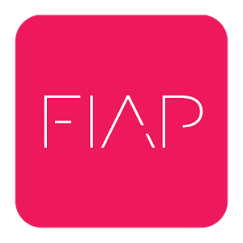

Profissional
SI / IBM do Brasil - Consultor de tecnologia
- Criou e implementou arquitetura e design J2EE, integrando aplicativos web com sistemas de fundos de investimentos legado através da arquitetura IBM HATS, DB2 e outros meios de persistência de dados.
- Responsável pelo treinamento de desenvolvedores na arquitetura de camadas MVC, padrões de desenvolvimento, Struts e outros modelos de design J2EE.
2001 - 2003
Banco Itaú S.A. - Analista de Sistemas Pleno
- Responsável pelo projeto do canal eletrônico de relacionamento com fornecedores do Banco Itaú S.A., o qual tem o objetivo de gerenciar o processo de escolha de fornecedores e o relacionamento com os fornecedores correntes.
- Efetuou análise e desenvolvimento para as áreas de mercado de capitais em sistema de custódia e controladoria de carteiras de fundos de investimento.
2003
Banco Itaú S.A. - Analista de Sistemas Sênior
2007 - 2010
Banco Itaú S.A. - Líder de Projetos
- Responsável pelo projeto do canal eletrônico de relacionamento com fornecedores do Banco Itaú S.A., o qual tem o objetivo de gerenciar o processo de escolha de fornecedores e o relacionamento com os fornecedores correntes.
- Efetuou análise e desenvolvimento para as áreas de mercado de capitais em sistema de custódia e controladoria de carteiras de fundos de investimento.
- Liderou a equipe de desenvolvimento de aplicativos web para as áreas de mercado de capitais, tais como custódia, controladoria, previdência privada e principalmente a área de gestão de ativos. Atuou na definição da arquitetura geral dos projetos e realizou a criação dos sites de gerenciamento de ativos:
- Trabalhou no projeto inovador de fundos de Investimentos ETF – liderando o projeto do website de operação de plataforma do fundo e no apoio da criação do website de apresentação do produto:
- Responsável pelo projeto de internet de expansão do produto ETF para America Latina criando o projeto ETF no mercado chileno com comercialização no Peru e Colômbia.
2011 - 2013
Banco Itaú S.A. - Líder de Projetos
- Premiação Destaque Y - Generalista
2011
Banco Itaú S.A. - Líder de Projetos
- Premiação Destaque Y - Generalista
2013
BRQ - Consultor de Projetos Web
- Atuou como desenvolvedor .NET no projeto do novo portal de escrituração de ações do Banco Itaú.
- Apoio ao desenvolvimento de novas funcionalidades no projeto Itaú Custódia – Fatca (Foreign Account Tax Compliance Act).
2014
Porto Seguro Conecta - Coordenador de TI
- Ingresso na Porto Seguro Conecta.
- Responsável pelo projeto da plataforma de vendas, aplicativo móvel de atendimento ao cliente e equipe de arquitetura.
- Liderou o gerenciamento do orçamento do projeto de TI e dos investimentos em TI, além de avaliar novas ferramentas e métodos de desenvolvimento de software.
- Liderei uma equipe multidisciplinar de 12 pessoas, auxiliando no desenvolvimento de habilidades, orientando e apoiando a adoção de Métodos Ágeis, criando uma equipe de alto desempenho
2014
VanHack - Vancouver Canada (4 meses)
- Desenvolvedor Free-lancer.
- Desenvolvimento de novas features de buscar detalhadas de vagas.
- Sign-on por conta Linkedin.
- Sync perfil Linkedin e perfil Vanhack.
2016
BRQ - Coordenador de Desenvolvimento de Software
- Ingresso na BRQ.
- Atuação como líder de equipe em projetos de cartões de crédito do banco Itaú.
- Responsável por orientar os membros da equipe, como usar as melhores práticas de codificação, padrão de design e qualidade do código.
- Forte conhecimento em projetos web Microsoft .NET Framework e plataforma Java.
- Programação em linguagem C # usando o framework ASP.MVC 5 ~ 6, o Entity Framework e o Web API.
- Codificação em projetos web Java EE usando Spring MVC, Spring Boot, Hibernate e SpringData.
- Participei de projetos internos da BRQ com arquitetura da AWS. Programação funções Lambda no Node.js, gateway de API para expor APIs de funções. Camada de dados usando DynamicDB e RDS Postgree.
2016
Pagseguro - Coordenador de Engenharia de Software
- Ingresso no Pagseguro.
- Coordenador de Engenharia de software de Adquirência do Pagseguro.
- Responsável pelos times de engenharia responsáveis pelas features de Disputas e Chargeback.
2019
Acadêmico
Treinamento Especialização Java
- SL 275 - Java Standard Edition.
- OO 226 - Orientação a Objeto Java.
- SL 351 - Business Component Development with Enterprise JavaBeans.
- SL 425 - Architecting and Designing J2EE Applications.
2002 - 2003
FGV - MBA Gestão Empresarial
- Conclusão do Curso Master Business Administration com enfâse em Gestão Empresarial.
2006
IPT - Mestrado
- Ingresso no curso de pós-graduação stricto sensu em Engenharia da Computação na área de pesquisa de Engenharia de Software.
2010
IPT - Mestrado - Qualificação
- Qualificação da dissertação com tema de desenvolvimento de software com protótipos
2013
IPT - Mestrado
- Aprovação da Banca de Defesa e obtenção do título de mestre.
2014

FIAP - Gradução
- Ingresso no quadro de professores do curso de SI.
- Professor da disciplina de "Técnicas avançadas de desenvolvimento Web" (Turma manhã).
- Conteúdo aplicado voltado a plataforma .NET, com foco no framework ASP.NET MVC 5 e EntityFramework.
2016
FIAP - Gradução
- Professor da disciplina de "Técnicas avançadas de desenvolvimento Web" (Manhã e Noite).
- Conteúdo aplicado voltado a plataforma .NET, com foco no framework ASP.NET MVC 5.
- Conteúdo de plataforma Java, com uso dos frameworks JSF e Hibernate.
- Professor da disciplina de "Desenvolvimento Cross-Platform Xamarin" (Manhã e Noite).
- Tutor na plataforma EAD Fiap On, nas disciplina de Front-End (html, css, js).
- Tutor na plataforma EAD Fiap On, nas disciplina de Java Básico, Java Web e .Net Web.
2017
FIAP - Gradução
- Tutor do projeto FIAP - Ministério Público do Estado de São Paulo.
2019
FIAP - MBA
- Professor da Disciplina de Xamarin no curso de MBA de Arquitetura e Desenvolvimento na plataforma .NET
2019